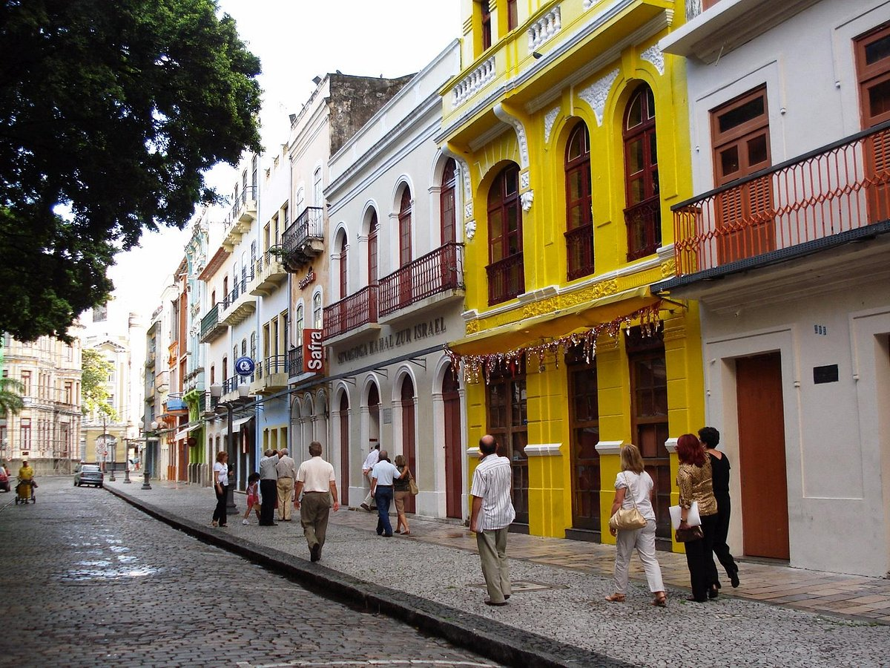

Praça do Arsenal e Paço do Frevo
A Praça do Arsenal é um encantador espaço público no Recife Antigo, conhecido por sua atmosfera agradável e arquitetura histórica. Nela, você encontrará o Paço do Frevo, um museu dedicado à cultura do frevo, uma das manifestações culturais mais icônicas de Pernambuco.


Cais da Alfândega e Rua do Bom Jesus
O Cais da Alfândega é uma área à beira-mar com restaurantes, lojas e uma vista pitoresca. A Rua do Bom Jesus, uma das ruas mais antigas do Recife, abriga casas coloridas e é um polo cultural da cidade. Ambos os locais oferecem uma experiência encantadora aos visitantes.
 Voltar para o Marco Zero